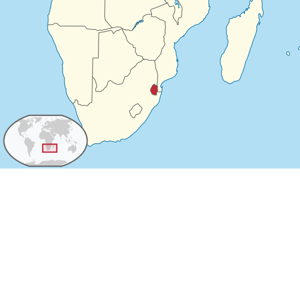
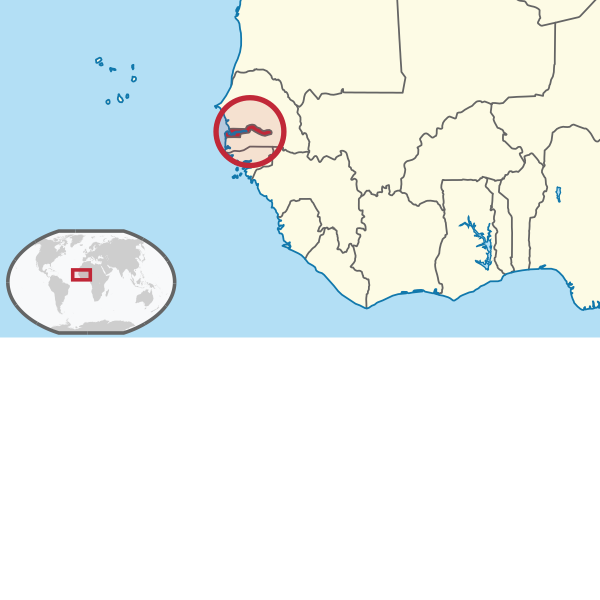
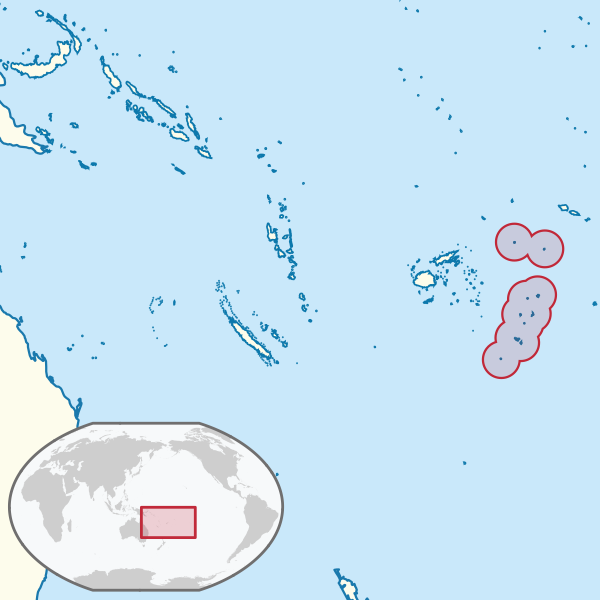
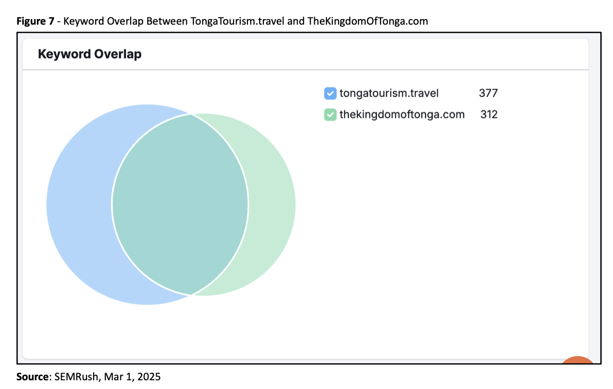

¿Estás contando una historia que invite a quedarse?

¿Quién está contando la historia de tu destino?

de actores del sector cultural y creativo
en redes sociales
puntuación máxima en búsquedas orgánicas
¿Cómo aparece tu marca cuando alguien te busca?


El sitio abandonado sigue activo, sigue indexado, sigue capturando visitantes.